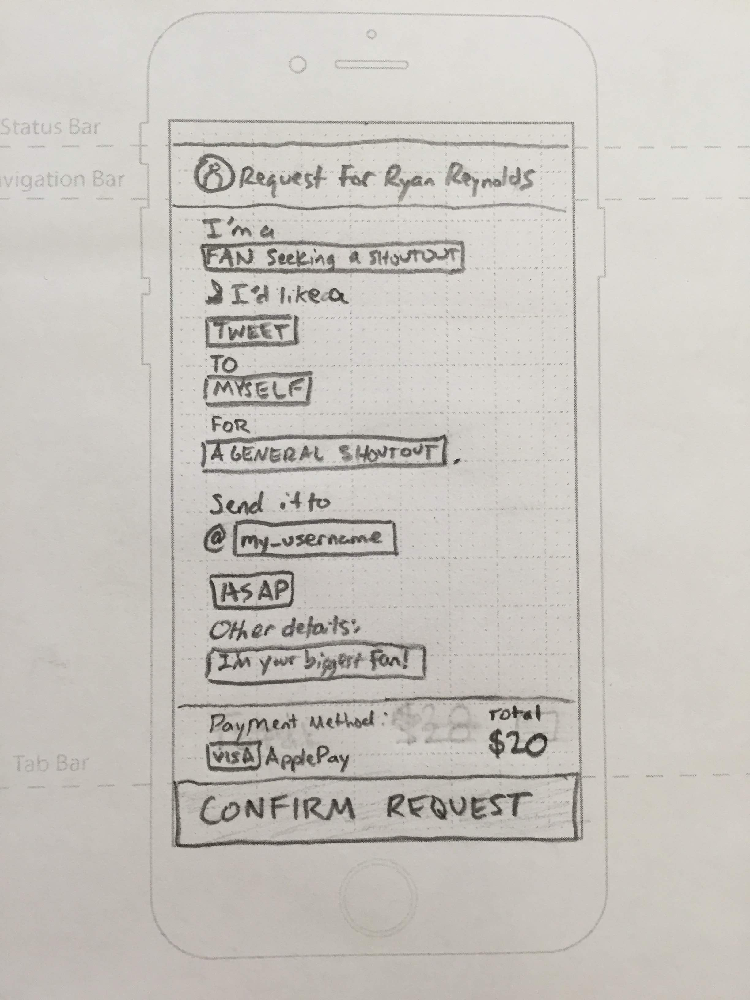
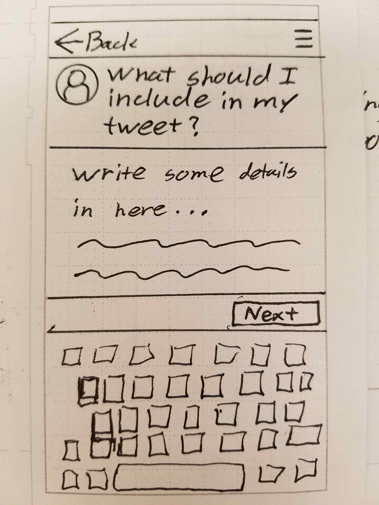

FAAMUS is a website that wants to make it easy to request personalized tweets from your favorite celebrities. My team and I redesigned the request process along with a responsive website in 2 ½ weeks.
Our Backstory
Brian came to us with the website, looking to improve the user experience by redesigning a mobile-first, user-centered design approach to the request process. Their analytics showed the lack of a mobile-friendly request and checkout process was holding back conversions. He also asked my team to explore the concept of using the platform at a live event, such as C2E2, to request a tweet instead of standing in line for an autograph or a drawing.
Getting Started
Our time with our client was short, so our team split the project into 3 user-centered design sprints. We had to move quickly, giving ourselves only four or five days per sprint.
Since our client said that the lack of a mobile-friendly request and checkout process was holding back conversions; I suggested we do a heuristic analysis of the request flow on both mobile and desktop before our first meeting with them.

Key Findings
(Heuristic Analysis)
- The color red felt over-used, making it difficult for users to determine where to focus their attention.
- The first thing a person saw on the homepage were 2 log in buttons on the header image, as well as a quote that did not provide enough information on the functionality of the site.
- At first glance search box looks like the search button (especially on mobile).
- Feedback was not given for both after requesting a shoutout and when the tweet was sent out.
Competitive Analysis
We conducted a competitive analysis to see if there were opportunities for our client. We identified two different types of competitors, which opened up opportunities for our design process later.
Since our client said that the lack of a mobile-friendly request and checkout process was holding back conversions; I suggested we do a heuristic analysis of the request flow on both mobile and desktop before our first meeting with them.
Research
During our heuristic analysis of the website, I wondered if users felt that the request process was impersonal ; the structure and the wording of the request was designed to appear as if you’re purchasing an item from a merchant. I took from this, the assumption of fans wanting a way to connect with celebrities in a more personal level, based on the idea that celebrities are usually viewed with admiration.
Our client also believed users would use this app to get a shoutout during a celebrity event; his idea was that existing celebrities would tweet while they were attending an event, such as wrestlers giving a shout-out to their fans.
Along with the original requests, we formed additional questions about the platform. We also believed that the platform could be used by businesses who wanted a promotion while connecting with fans.
After forming our questions and analyzing the existing site, our team wanted to understand our users by interviewing existing and potential users.
The Interviews
We interviewed 7 people, including comic book and wrestling fans, as well as avid social media users. We created an affinity diagram to find key points from our interviews and found several.
Interview Takeaways
- Fans want to feel recognized by celebrities: “He was having fun with us… It was cool how aware of us he was…to be recognized by him.”
- Fans want to connect with celebrities on a genuine and personal level: “I want their take…how they think.”
- Celebrities seem inaccessible: “I don’t expect a response… it’s more about putting something funny or witty out there.”
- Fans have difficulty knowing what to say to celebrities: “I wouldn’t know what to say…”
Define
We started defining our users to help us define the problem. We defined our primary persona: the Passionate Fan, and two secondary personas: the Quirky Celebrity and the Social Entrepreneur.
Passionate Fan
- • Is a friend or is part of a niche fandom
- • Uses Twitter
- • Would appreciate messages as gifts
Quirky Celebrity
- • Willing to take the time to connect with their fanbase, often looking for novel ways to do so
Social Entrepeneur
- • Owner of a small business, who wants to reach a celebrity’s audience through an endorsement
- • Wants to grow their fan or client base
Our Problem
Our main persona made us realize we had another main problem:
"Fans want a better means of utilizing social media to interact with celebrities in a way that makes the celebrity more human and accessible."
To address this problem in addition to the original, we created these design principles as a framework for us and designers to utilize in the future.
Design Principles
- Celebrities are people too: We’re all human. Celebrities shouldn’t feel out of reach to their fans.
- Let’s get deep, down, and personal: Promote authentic and meaningful interactions between celebrities and fans.
- Your grandma should be able to do it: Stay simple, be upfront, and keep users informed about the process, from request to payment.
- Don’t take this too seriously: Keep things light, and help users have fun with their 15 minutes of fame.
Ideate & Learn
Now that we defined our basic design framework and problems, we could design the shout-out request flow. We had Brian, the client, join us in the beginning, which was valuable because we gained insight into his expectations and desires.
We continued our ideation process by discussing the general user flow of the shout-out request. In the end, we chose 3 design directions: the builder, the chat, and the guide:
The Builder
The Chat
The Guide

The Chat
I prototyped the request process using the “Chat” model. The Quartz app-inspired design was made with the intention of making form-filling fun while keeping the overall feel of a twitter conversation.
Testing
We tested our prototypes at the Chicago Comic and Entertainment Expo where people may be more interested in receiving a live tweet instead of waiting in line. We interviewed 12 individuals; 6 tested our prototypes, the others gave us their opinions because they they don’t use Twitter.
Key Findings
(Usability Test)
- People appreciated seeing an overview of the request before putting in the request.
- People weren’t interested in using the service at the live event; the comic book world is rooted in physicality.
- People expressed interest in using the platform for endorsement purposes.
- People liked the conversational tone and playfulness from the messenger and the builder prototypes.
Refining
Our tests gave us insights into the three concepts. We decided to take the best ideas from all three, formulated how it might be designed and had Patrick design the prototype of the request process. Meanwhile Cody and I designed desktop and mobile wireframes for several key pages to address the findings from our Heuristic Analysis.
The Prototype
Our final model of the request process had several key elements; the conversational piece as a guide for users, as well as the flexibility of the guide piece.
Wireframes
Our team also had to improve upon the website based on the heuristic analysis that we had conducted earlier. In addition to collaborating on several key screens(Home, Request, About), I created wireframes and annotations for a simplified version of several responsive web pages(Search, Sign-Up, Sign-In).
Insights
Hindsight:
-
Explore the promotional aspect of request process
Given the time, our client had my team focus on the fan persona and flow. We ended up designing screens for the promotional flow based on our intuition. I would conduct research with small businesses that held wrestling and sports events, see why and how they would utilize the service.
-
Test the high fidelity prototype we designed
The amount of time we were given did not allow for us to validate our last design, which is not only crucial to the ux design process, but crucial to understanding if our deliverables were valid to the users.
What I Learned
-
Stay on the same page
During our time together, I noticed everyone had different ideas and methods for the design process. Despite my team’s differences in our process, we stayed on the same page thanks to checking in with each other and having a checklist of tasks and deliverables that needed to be accomplished. We would also check in with our client to make certain our design decisions would be valid; this would prove helpful when the client informed us of changes in the business, such as when opportunities to a group of celebrities had opened up.
-
We’re all on the same boat
Things went fairly smoothly through most of the process; however, like a ship’s crew our team starting working less optimally because of strong conflicting personalities. Despite finishing the project on an satisfying note, I learned that it’s important for teams to gauge and balance each other’s emotional and physical well-being throughout their time together.